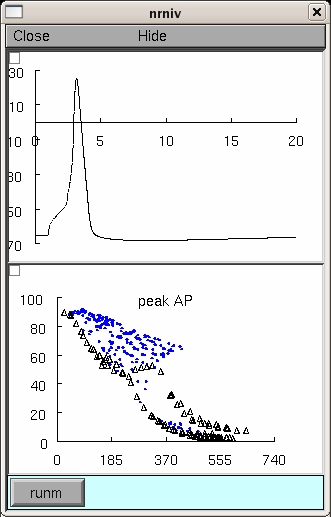

NEURON mod files from the paper:
Migliore M, Ferrante M, Ascoli GA (2005)
Signal propagation in oblique dendrites of CA1 pyramidal cells.
J Neurophysiol 94:4145-4155
The model shows how the back- and forward propagation of action potentials
in the oblique dendrites of CA1 neurons could be modulated by local properties
such as morphology or active conductances.
The simulation reproduces Fig.2A of the paper, using neuron 5038804:

Morphology files for all the neurons used in this paper can be found at:
http://krasnow.gmu.edu/L-Neuron
Under unix systems:
to compile the mod files use the command
nrnivmodl
and run the simulation hoc file with the command
nrngui fig2A.hoc
Under Windows systems:
to compile the mod files use the "mknrndll" command.
A double click on the simulation file
fig2A.hoc
will open the simulation window.
Questions on how to use this model
should be directed to michele.migliore@pa.ibf.cnr.it